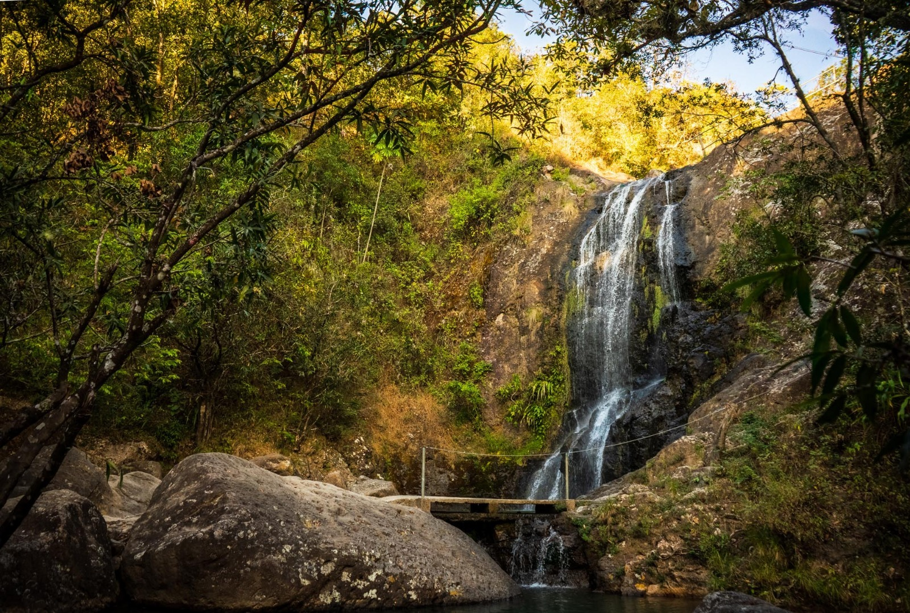
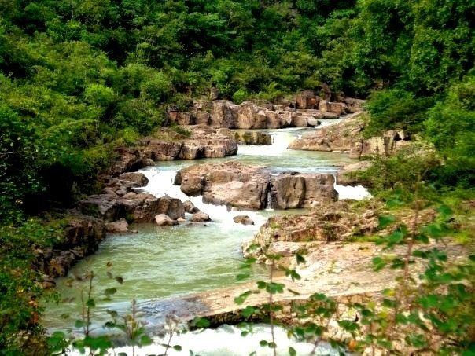

Perquín Municipio con relevancia histórica por su papel durante el conflicto armado. Cuenta con museos y espacios de memoria histórica.

Río sapo Conocido por la claridad de sus aguas y su entorno natural bien conservado. Es uno de los principales atractivos naturales del departamento.